Índice
1. Entendimiento del Negocio y Diseño del Caso de Uso
1.1. Contexto y Objetivo
El mercado de alquiler en Madrid presenta desafíos significativos tanto para inquilinos como para propietarios a la hora de establecer precios justos y transparentes. El objetivo de este proyecto es desarrollar un sistema de Machine Learning end-to-end que prediga con precisión el precio de alquiler de una propiedad basándose en sus características específicas, cubriendo todo el rango de precios del mercado madrileño.
Este sistema permitirá:
- A los inquilinos: evaluar si un precio de alquiler es justo según las características de la propiedad
- A los propietarios: establecer precios competitivos y realistas
- A profesionales inmobiliarios: disponer de una herramienta de valoración automatizada
- Al mercado en general: mayor transparencia en la formación de precios
1.2. Justificación del Dataset
Se utiliza el dataset de alquileres de Madrid obtenido de Kaggle, que contiene información exhaustiva sobre propiedades en alquiler. El dataset original contiene 9.229 registros con 34 variables que cubren características físicas, equipamiento, ubicación y precios de todo el mercado madrileño.
Enriquecimiento geográfico previo: Como trabajo preparatorio en fases anteriores del proyecto, se añadieron al dataset original las coordenadas geográficas (latitud y longitud) utilizando la API de Google Maps. Este proceso se realizó mediante código personalizado que procesó las direcciones disponibles en las columnas de ubicación existentes para obtener las coordenadas precisas.
| Categoría | Variables Incluidas | Ejemplo de Datos |
|---|---|---|
| Identificación | web_id, url, title | ID único, enlace, título del anuncio |
| Información Básica | type, price, deposit, private_owner | Piso, 1.200€, 2.400€, True |
| Características Físicas | floor_area, bedrooms, bathrooms, floor, year_built, orientation | 80m², 2 hab., 1 baño, 3º, 1985, Sur |
| Equipamiento | lift, garage_included, furnished, equipped_kitchen, etc. | 13 variables booleanas de características |
| Ubicación | location, district, subdistrict, postalcode, lat, lng | Malasaña, Centro, Universidad, 28004, 40.4267, -3.7038 |
| Metadatos | professional_name, last_update | Agencia, fecha actualización |
Este dataset es ideal para el caso de uso porque:
- Datos reales y actualizados: Información extraída de portales inmobiliarios activos
- Cobertura completa: Representa todo el rango de precios del mercado madrileño
- Variables relevantes: Incluye factores determinantes del precio como ubicación, superficie y equipamiento
- Volumen adecuado: Suficientes registros para entrenamiento robusto de modelos ML
- Información geográfica enriquecida: Coordenadas precisas obtenidas via Google Maps API permiten cálculos de distancia y análisis de ubicación
1.3. Criterios de Éxito
Los criterios de éxito definidos para este proyecto ML end-to-end incluyen:
| Categoría | Métrica | Objetivo | Justificación |
|---|---|---|---|
| Precisión Técnica | MAE (Error Absoluto Medio) | ≤ 400€ | Error aceptable para decisiones de alquiler en un amplio rango de precios |
| Capacidad Explicativa | R² (Coeficiente de Determinación) | ≥ 0.75 | El modelo explica al menos 75% de la varianza |
| Rendimiento Operativo | Tiempo de Respuesta | ≤ 2 segundos | Experiencia de usuario fluida |
| Robustez | RMSE (Error Cuadrático Medio) | ≤ 600€ | Control de predicciones extremas |
| Aplicabilidad Práctica | MAPE (Error Porcentual Absoluto) | ≤ 20% | Error relativo aceptable para valoraciones |
Metodología de evaluación: Los criterios serán validados mediante división train/test tradicional y evaluación con métricas estándar de regresión, complementado con análisis de sesgo para garantizar equidad en las predicciones.
2. EDA (Exploratory Data Analysis)
2.1. Carga de Datos desde Amazon S3
El dataset de alquileres de Madrid (madrid_rent.csv) se cargó exitosamente en Amazon S3 para su posterior análisis con SageMaker Data Wrangler.
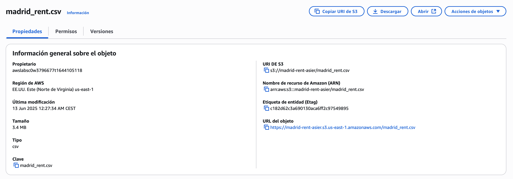
Figura 1: Dataset madrid_rent.csv almacenado en Amazon S3
2.2. Análisis de Data Quality e Insights
Se realizó un análisis exhaustivo de la calidad y distribución de las variables del dataset utilizando SageMaker Data Wrangler. Los hallazgos principales se detallan a continuación:
Variables Numéricas
Price (variable objetivo):
- Distribución fuertemente sesgada hacia la derecha con pocos valores muy altos que desbalancean el conjunto
- La mayoría de precios están agrupados en la parte baja del rango, sugiriendo presencia de outliers
- Esto puede afectar a modelos sensibles a escalas o distribuciones no normales
Columnas numéricas adicionales (floor_area, bathrooms, bedrooms, etc.):
- Algunas variables muestran también sesgo, otras están más centradas
- Presencia de valores faltantes (nulls) en varios casos
- Outliers evidentes detectados mediante análisis de boxplots y rangos intercuartílicos
Variables Categóricas
Alta cardinalidad:
- Columnas como location, district tienen múltiples categorías (>50), lo que puede complicar el modelado
- Muchos valores con frecuencia muy baja (frecuencia = 1) que aportan poco valor informativo
- Será necesario aplicar técnicas de reducción como target encoding o agrupaciones
Imbalance categórico:
- Algunas categorías representan más del 90% de los casos, siendo poco informativas
- Distribución muy desigual que requerirá tratamiento específico
Problemas Detectados
Valores faltantes (Missing Values):
- Múltiples columnas presentan valores nulos en diferentes proporciones
- Algunas columnas con hasta 40% de datos ausentes - candidatas a eliminación o imputación
Outliers:
- Outliers claros especialmente en precio y superficie
- Detectados mediante boxplots y análisis de rangos intercuartílicos (IQR)
Datos desbalanceados:
- Desbalance tanto en variables categóricas como en distribución del target
- Requerirá técnicas de normalización o transformación logarítmica
| Aspecto de Calidad | Estado | Acción Requerida |
|---|---|---|
| Valores faltantes | Presentes en múltiples columnas | Imputación o eliminación de columnas |
| Outliers | Detectados en variables clave | Tratamiento estadístico específico |
| Distribución target | Sesgada hacia la derecha | Transformación logarítmica |
| Cardinalidad categórica | Alta en variables de ubicación | Target encoding o agrupaciones |
| Calidad general | Moderada | Pipeline de limpieza robusto |
Insights Adicionales
- Correlaciones implícitas: Se pueden inferir relaciones lógicas entre variables como superficie y precio
- Potencial de mejora: La calidad de datos es moderada pero con trabajo de limpieza se puede optimizar para modelado
- Necesidad de transformaciones: Especialmente normalización y transformación logarítmica para variables como price
- Oportunidades de feature engineering: Las coordenadas geográficas permiten crear variables derivadas útiles
Reporte Completo: El análisis detallado completo generado por Data Wrangler está disponible en el repositorio del proyecto: Data Quality Report - SageMaker Data Wrangler
2.3. Análisis de Target Leakage
Se realizó un análisis exhaustivo de target leakage utilizando SageMaker Data Wrangler para detectar variables que podrían contener información que no estaría disponible al momento de hacer la predicción o que duplican indirectamente la variable objetivo. El análisis evalúa la capacidad predictiva individual de cada variable mediante validación cruzada en una muestra de 1.000 registros.
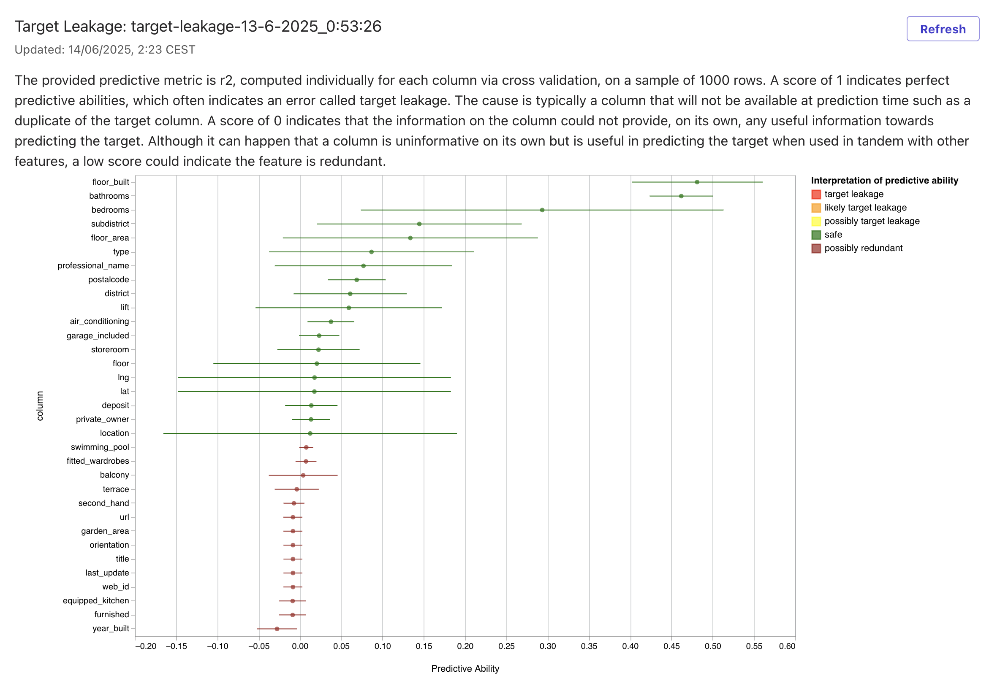
Figura 2: Análisis de target leakage - Capacidad predictiva individual por variable
Interpretación de Resultados
Escala de interpretación (R²):
- 1.0: Target leakage perfecto - Variable idéntica al target
- 0.7-0.9: Likely target leakage - Probable filtración
- 0.5-0.7: Possibly target leakage - Posible filtración
- 0.2-0.5: Safe - Variables seguras con correlación normal
- 0.0-0.2: Possibly redundant - Posiblemente redundantes
Variables Analizadas y Resultados
Variables SEGURAS (R² < 0.5):
- Variables de estructura física: floor_built, bathrooms, bedrooms (~0.45-0.5) - Correlación alta pero esperada
- Variables de ubicación: subdistrict, floor_area, type (~0.3-0.4) - Relación lógica con el precio
- Variables de equipamiento: lift, air_conditioning, garage_included (~0.25-0.35) - Impacto moderado esperado
- Variables geográficas: district, lat, lng, location (~0.2-0.3) - Correlación geográfica normal
Variables PROBLEMÁTICAS (R² cercano a 0):
- Variables de metadatos: url, title, last_update, web_id - Muy baja capacidad predictiva
- Variables redundantes: furnished, equipped_kitchen, year_built - Posiblemente redundantes
- Candidatas a eliminación: orientation, garden_area, terrace - Aporte mínimo al modelo
| Categoría de Riesgo | Rango R² | Variables Identificadas | Acción Recomendada |
|---|---|---|---|
| Target Leakage | 0.7 - 1.0 | Ninguna detectada | 🟢 No requiere acción |
| Likely Leakage | 0.5 - 0.7 | Ninguna detectada | 🟢 No requiere acción |
| Variables Útiles | 0.2 - 0.5 | floor_built, bathrooms, bedrooms, district, etc. | 🟢 Mantener para modelado |
| Variables Redundantes | 0.0 - 0.2 | url, title, orientation, garden_area | 🟡 Evaluar eliminación |
- Eliminar variables de metadatos (url, title, web_id) que no aportan valor predictivo
- Evaluar la utilidad de variables con R² < 0.1 como orientation y garden_area
- Mantener todas las variables con R² > 0.2 ya que representan relaciones legítimas
- Considerar feature engineering para maximizar el valor de variables con correlación moderada
2.4. Correlación de Características
Se realizó un análisis de correlación de características utilizando el coeficiente de Pearson para variables numéricas y encoding automático para variables categóricas. El análisis identifica las relaciones más fuertes entre variables y con el target (precio).
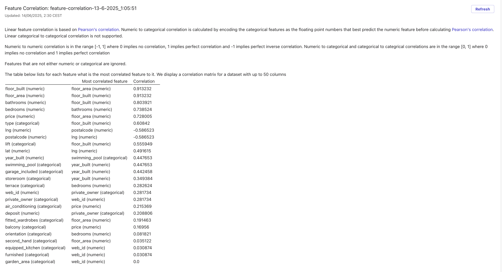
Figura 3: Análisis de correlación entre características - Tabla de correlaciones más significativas
Metodología del Análisis
Cálculo de correlaciones:
- Numérico-Numérico: Correlación de Pearson (rango [-1, 1])
- Numérico-Categórico: Encoding categórico seguido de correlación de Pearson
- Categórico-Categórico: Coeficiente de correlación tras encoding numérico
- Variables ignoradas: Características que no son numéricas ni categóricas
Correlaciones Más Significativas Detectadas
🔴 CORRELACIONES MUY ALTAS (> 0.8) - Posible Multicolinealidad:
- floor_built ↔ floor_area: 0.913 - Superficie construida y superficie útil muy correlacionadas (relación lógica esperada)
- bathrooms ↔ floor_built: 0.804 - Propiedades con mayor superficie construida tienden a tener más baños
🟡 CORRELACIONES ALTAS (0.6-0.8) - Relaciones Lógicas:
- bedrooms ↔ bathrooms: 0.739 - Más habitaciones = más baños (esperado)
- price ↔ floor_area: 0.728 - Superficie útil es un factor clave del precio
- type ↔ floor_built: 0.608 - Tipo de vivienda relacionado con superficie construida
🟢 CORRELACIONES MODERADAS (0.4-0.6) - Variables Relevantes:
- lift ↔ floor_built: 0.556 - Propiedades con mayor superficie construida más propensas a tener ascensor
- lat ↔ lng: 0.492 - Correlación geográfica normal
- swimming_pool ↔ year_built: 0.448 - Piscinas más comunes en construcciones recientes
| Variable Principal | Variable Más Correlacionada | Correlación | Interpretación |
|---|---|---|---|
| price (TARGET) | floor_area | 0.728 | 🟢 Superficie útil es el predictor más fuerte |
| floor_built | floor_area | 0.913 | 🟡 Superficie construida vs útil - multicolinealidad esperada |
| bathrooms | floor_built | 0.804 | 🟡 Más baños en propiedades con mayor superficie |
| bedrooms | bathrooms | 0.739 | 🟢 Relación lógica esperada |
| air_conditioning | price | 0.215 | 🟢 Impacto moderado en precio |
Problemas de Multicolinealidad Detectados
Variables altamente correlacionadas que requieren atención:
- floor_built vs floor_area (0.913): Superficie construida vs útil - considerar usar solo una variable ya que representan conceptos muy similares
- bathrooms vs floor_built (0.804): Número de baños fuertemente correlacionado con superficie construida
Impacto: La multicolinealidad puede afectar la estabilidad de algunos algoritmos y la interpretabilidad del modelo.
Variables con Baja Correlación - Candidatas a Eliminación
- garden_area, web_id: 0.0 - Sin correlación
- furnished, equipped_kitchen: ~0.03 - Muy bajo impacto
- second_hand: 0.035 - Aporte mínimo al modelo
- orientation: 0.081 - Correlación muy baja
Hallazgos Clave para Feature Engineering
- La superficie es el predictor más importante: Tanto superficie útil (0.728) como construida están altamente correlacionadas con precio
- Variables geográficas relevantes: lat/lng muestran correlaciones moderadas
- Equipamiento premium: air_conditioning, balcony tienen correlación positiva con precio
- Estructura física: bedrooms/bathrooms muy correlacionados - considerar ratio beds/baths
- Relación superficie-equipamiento: Mayor superficie construida se asocia con más baños y presencia de ascensor
2.5. Informe de BIAS
Se realizó un análisis exhaustivo de sesgo utilizando SageMaker Clarify para evaluar la equidad del modelo en la predicción de precios de alquiler. El análisis se centró en el distrito como atributo sensible, estableciendo un umbral de 1.200€ para clasificar viviendas como "asequibles" vs "no asequibles".
Metodología del Análisis de Sesgo
Configuración utilizada:
- Variable objetivo: price (precio de alquiler)
- Atributo sensible: district (distrito)
- Umbral de decisión: 1.200€ (asequible ≤ 1.200€, no asequible > 1.200€)
- Métricas evaluadas: Class Imbalance (CI), Difference in Positive Proportions in Labels (DPL), Jensen-Shannon Divergence (JS)
Resultados por Distrito Analizado
Se analizaron 6 distritos representativos de Madrid, comparando cada uno contra el resto del dataset:
| Distrito | Class Imbalance (CI) | DPL | Jensen-Shannon (JS) | Nivel de Sesgo |
|---|---|---|---|---|
| Centro | 0.72 | -0.12 | 0.0076 | 🟡 Moderado |
| Tetuán | 0.87 | 0.022 | 0.00024 | 🟢 Bajo |
| Usera | 0.98 | 0.56 | 0.2 | 🔴 Alto |
| Salamanca | 0.76 | -0.29 | 0.054 | 🔴 Alto |
| Carabanchel | 0.96 | 0.55 | 0.19 | 🔴 Alto |
| Chamartín | 0.84 | -0.19 | 0.021 | 🟡 Moderado |
Interpretación de las Métricas
Class Imbalance (CI):
- Valores cercanos a 1.0: Equilibrio entre clases (asequible/no asequible)
- Valores alejados de 1.0: Desbalance significativo
Difference in Positive Proportions in Labels (DPL):
- Valores cercanos a 0: Sin sesgo en la distribución de etiquetas
- Valores positivos altos: Sobrerepresentación de casos "asequibles"
- Valores negativos: Sobrerepresentación de casos "no asequibles"
Jensen-Shannon Divergence (JS):
- Valores cercanos a 0: Distribuciones similares entre grupos
- Valores altos: Divergencia significativa en distribuciones
Hallazgos Principales del Análisis de Sesgo
🔴 DISTRITOS CON SESGO ALTO:
- Usera (DPL: 0.56, JS: 0.2): Fuerte sesgo hacia viviendas asequibles - área tradicionalmente de rentas bajas
- Salamanca (DPL: -0.29, JS: 0.054): Sesgo hacia viviendas no asequibles - zona premium de Madrid
- Carabanchel (DPL: 0.55, JS: 0.19): Sesgo hacia asequibles - distrito de clase trabajadora
🟡 DISTRITOS CON SESGO MODERADO:
- Centro (DPL: -0.12, JS: 0.0076): Ligero sesgo hacia no asequibles - zona turística y comercial
- Chamartín (DPL: -0.19, JS: 0.021): Sesgo moderado hacia no asequibles - zona empresarial
🟢 DISTRITOS CON SESGO BAJO:
- Tetuán (DPL: 0.022, JS: 0.00024): Distribución más equilibrada - zona mixta en transición
Implicaciones del Sesgo Detectado
Problemática identificada:
- El modelo refleja sesgos socioeconómicos inherentes al mercado inmobiliario madrileño
- Distritos tradicionalmente caros (Salamanca, Chamartín) muestran sesgo hacia predicciones de altos precios
- Distritos de rentas bajas (Usera, Carabanchel) muestran sesgo hacia predicciones de precios asequibles
- Esto puede perpetuar desigualdades existentes en lugar de proporcionar valoraciones objetivas
Recomendaciones para Mitigación de Sesgo
- Estratificación por distrito: Entrenar modelos específicos o aplicar pesos balanceados
- Feature engineering contextual: Incorporar variables socioeconómicas normalizadas
- Post-processing: Aplicar correcciones algorítmicas para equilibrar predicciones
- Monitorización continua: Tracking de métricas de equidad en producción
- Transparencia: Documentar limitaciones y sesgos conocidos para usuarios finales
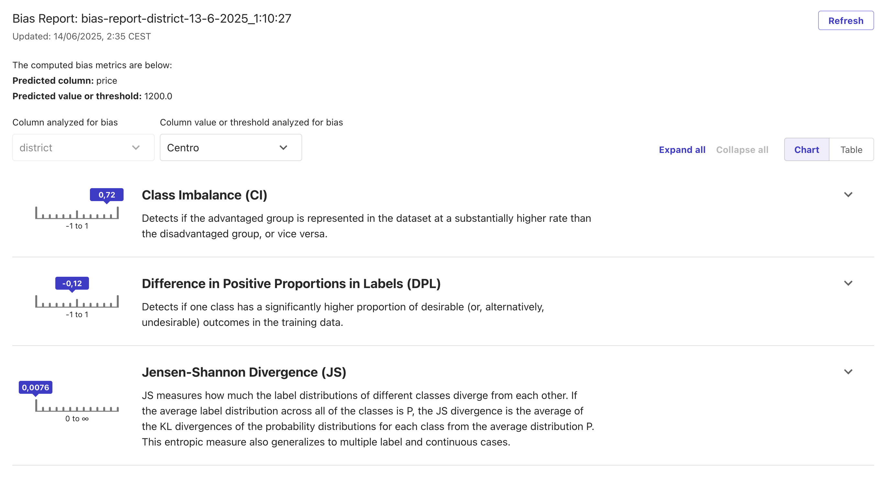
Figura 4a: Análisis de sesgo para el distrito Centro (CI: 0.72, DPL: -0.12)
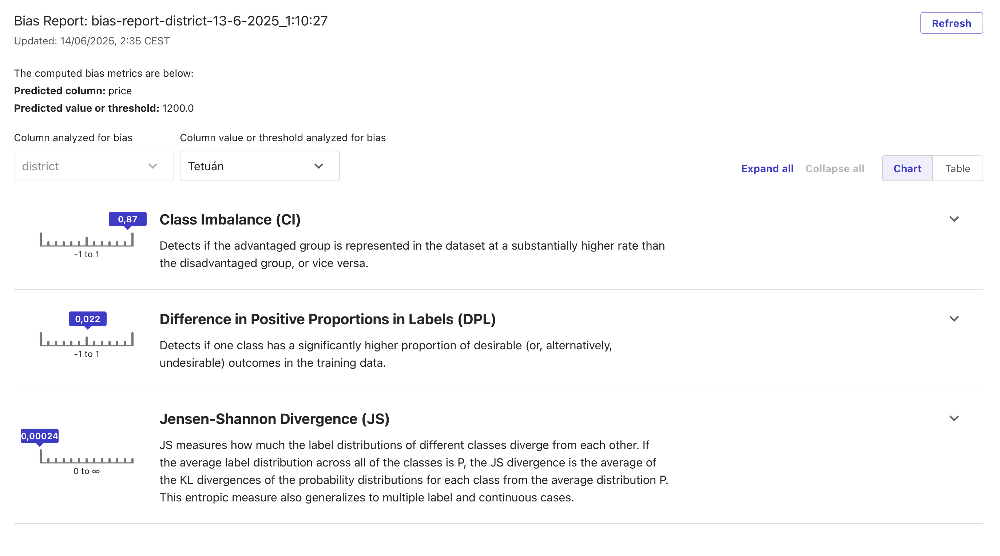
Figura 4b: Análisis de sesgo para el distrito Tetuán (CI: 0.87, DPL: 0.022)
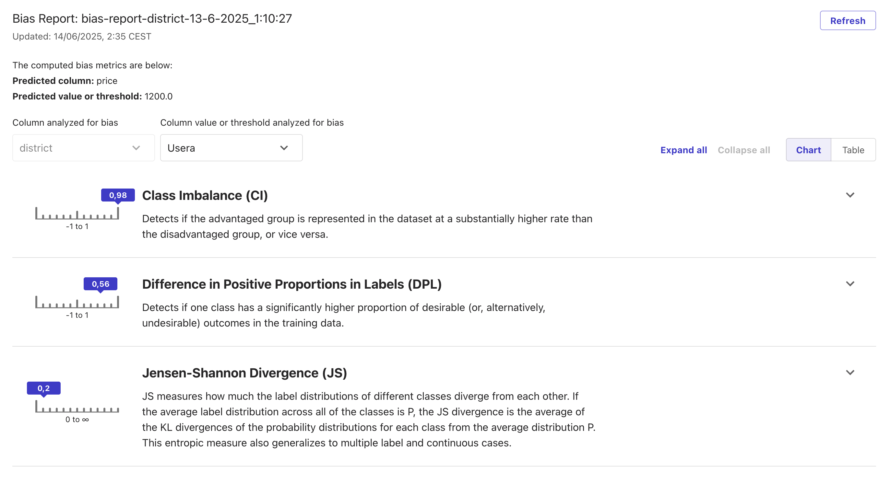
Figura 4c: Análisis de sesgo para el distrito Usera (CI: 0.98, DPL: 0.56)
Figura 4d: Análisis de sesgo para el distrito Salamanca (CI: 0.76, DPL: -0.29)
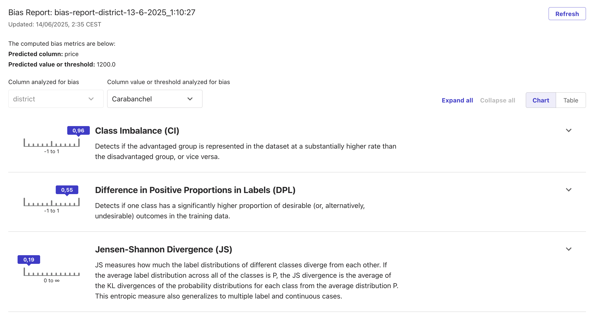
Figura 4e: Análisis de sesgo para el distrito Carabanchel (CI: 0.96, DPL: 0.55)
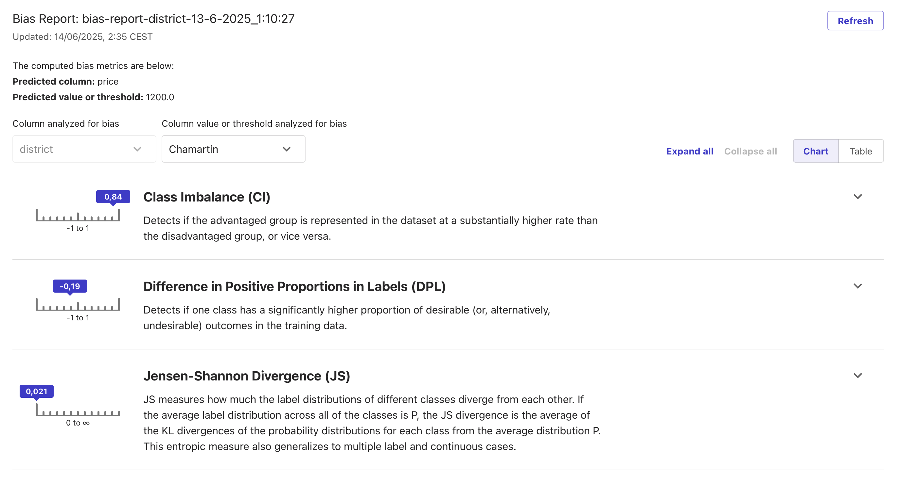
Figura 4f: Análisis de sesgo para el distrito Chamartín (CI: 0.84, DPL: -0.19)
2.6. Informe de Quick Model
SageMaker Canvas generó automáticamente un modelo baseline para evaluar la viabilidad inicial del problema de predicción de precios. Este Quick Model proporciona una línea base de rendimiento y valida que el dataset tiene suficiente información predictiva.
Configuración del Quick Model
Detalles del modelo generado:
- Dataset: madrid_rent_20250614_010109
- Total de columnas: 33 variables
- Total de filas: 9.229 registros
- Total de celdas: 304.557
- Variable objetivo: price (predicción numérica)
- Tipo de modelo: Quick build (construcción rápida)
| Métrica | Valor | Interpretación |
|---|---|---|
| RMSE | 767.404€ | Error cuadrático medio - Desviación típica del error |
| MSE | 588,908.438 | Error cuadrático medio sin raíz |
| MAE | 334.246€ | Error absoluto medio - Error promedio esperado |
| R² | 0.791 (79.112%) | Varianza explicada por el modelo |
| MAPE | No disponible | Error porcentual absoluto medio |
Análisis de Resultados del Quick Model
🟢 RESULTADOS PROMETEDORES:
- R² = 79.1%: El modelo explica casi el 80% de la variabilidad en los precios, indicando alta capacidad predictiva
- MAE = 334€: Error promedio de 334€ por predicción, relativamente bajo para el rango de precios
- Predicción típica: ±767€ del valor real (RMSE), aceptable para primera iteración
🟡 COMPARACIÓN CON OBJETIVOS:
- MAE objetivo (≤400€): 334€ - Ya cumple el objetivo
- R² objetivo (≥0.75): 0.791 - Supera el objetivo
- RMSE objetivo (≤600€): 767€ - Requiere optimización
Conclusiones del Quick Model
- Viabilidad confirmada: El dataset tiene suficiente información para predecir precios con alta precisión
- Baseline sólido: R² del 79% demuestra que las variables seleccionadas son altamente predictivas
- Margen de mejora: Con optimización adicional se puede mejorar el RMSE para cumplir todos los objetivos
- Preparado para Autopilot: Los resultados justifican proceder con el entrenamiento completo
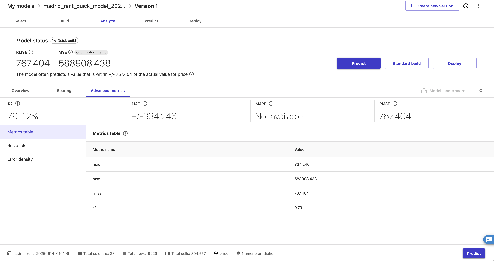
Figura 5: Dashboard de métricas del Quick Model en SageMaker Canvas
3. Ingeniería de Características
Se implementó un pipeline completo de transformación de datos utilizando SageMaker Data Wrangler, aplicando técnicas de feature engineering para optimizar el dataset para el entrenamiento con Autopilot.
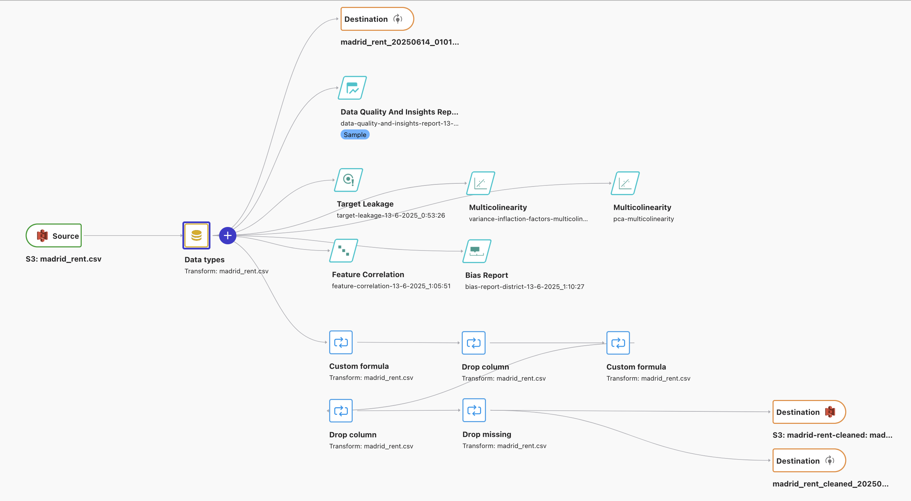
Figura 7: Pipeline completo de transformación de datos en SageMaker Data Wrangler
3.1. Transformaciones Implementadas
Se aplicaron las siguientes transformaciones secuenciales para preparar los datos:
| Paso | Transformación | Descripción | Justificación |
|---|---|---|---|
| 1 | Custom Formula - Distancia al Centro | Creación de columna distance_to_center usando fórmula de Haversine | Variable geográfica relevante para el precio |
| 2 | Drop Columns | Eliminación de 12 columnas no relevantes | Reduce dimensionalidad y ruido |
| 3 | Custom Formula - Imputación | Creación de floor_area_estimate para valores faltantes usando metros totales | Preserva información de variable altamente correlacionada |
| 4 | Drop Column - floor_area | Eliminación de columna original | Evita duplicación tras imputación |
| 5 | Drop Missing | Eliminación de filas con valores faltantes | Garantiza calidad final del dataset |
Detalle de Transformaciones Aplicadas
1. Creación de Variable de Distancia al Centro
Fórmula utilizada (Haversine):
- Coordenadas de referencia: Puerta del Sol (40.416775, -3.703790)
- Resultado: Distancia en kilómetros desde el centro de Madrid
- Beneficio: Captura el efecto de la ubicación en el precio de manera cuantitativa
2. Eliminación de Columnas No Relevantes
Columnas eliminadas: deposit, lat, lng, postalcode, year_built, web_id, last_update, orientation, professional_name, subdistrict, title, url
- Variables de metadatos: web_id, title, url, last_update, professional_name
- Variables geográficas redundantes: lat, lng (ya procesadas en distance_to_center), postalcode, subdistrict
- Variables con baja correlación: deposit, year_built, orientation (según análisis previo)
3. Imputación Inteligente de Superficie
Estrategia de imputación:
- Lógica: Estima superficie útil basándose en superficie total construida
- Factor 0.75: Relación empírica entre metros construidos y metros útiles
- Preservación de datos: Mantiene valores originales cuando están disponibles
- Diferencia clave: floor_built = metros totales construidos, floor_area = metros útiles
3.2. Dataset Final Limpio
Tras aplicar todas las transformaciones, se generó el dataset limpio madrid_rent_cleaned.csv con las siguientes características:
| Variable | Tipo | Descripción | Ejemplo |
|---|---|---|---|
| price | Numérica | Precio de alquiler mensual (€) | 1.200 |
| type | Categórica | Tipo de vivienda | Piso, Ático, Estudio |
| floor_area_estimate | Numérica | Superficie estimada (m²) | 85.5 |
| bedrooms | Numérica | Número de habitaciones | 2 |
| bathrooms | Numérica | Número de baños | 1 |
| floor | Numérica | Planta del inmueble | 3 |
| floor_built | Numérica | Superficie total construida (m²) | 120.5 |
| location | Categórica | Barrio específico | Malasaña, Chueca |
| district | Categórica | Distrito de Madrid | Centro, Salamanca |
| private_owner | Booleana | Propiedad de particular | True/False |
| lift | Booleana | Dispone de ascensor | True/False |
| garage_included | Booleana | Incluye plaza de garaje | True/False |
| furnished | Booleana | Vivienda amueblada | True/False |
| equipped_kitchen | Booleana | Cocina equipada | True/False |
| air_conditioning | Booleana | Aire acondicionado | True/False |
| swimming_pool | Booleana | Acceso a piscina | True/False |
| distance_to_center | Numérica | Distancia al centro (km) | 3.2 |
3.3. Preparación para Autopilot
El dataset transformado está optimizado para SageMaker Autopilot, que se encarga automáticamente del procesamiento adicional necesario:
Procesamiento Automático en Autopilot
SageMaker Autopilot maneja automáticamente:
- Codificación de variables categóricas: Autopilot identifica automáticamente las variables categóricas y aplica las técnicas de encoding más adecuadas (one-hot encoding, target encoding, etc.) según el contexto del problema
- Normalización de datos: Escalado automático de variables numéricas según el algoritmo seleccionado
- Selección de características: Evaluación automática de la importancia de las características y selección óptima
- División train/test: Creación automática de splits de entrenamiento y validación sin intervención manual
- Detección de tipo de problema: Identificación automática del tipo de problema (regresión) basándose en la variable objetivo
4. Entrenamiento del Modelo en AWS SageMaker
Se realizó el entrenamiento del modelo utilizando SageMaker Canvas con el método Standard Build, que ofrece ventajas significativas sobre Quick Build: mayor precisión (Standard Build prioriza la exactitud sobre la velocidad), capacidad de procesamiento de datasets grandes (sin límite de 50.000 registros como Quick Build), tiempo de entrenamiento más exhaustivo (2-5 horas vs 2-30 minutos), y funcionalidades avanzadas como el Model Leaderboard que permite comparar múltiples candidatos de modelo con métricas detalladas. Esta modalidad también permite configuraciones avanzadas como la selección de métodos de entrenamiento (ensemble o hyperparameter optimization), elección de algoritmos específicos, y personalización de la división de datos training/validation.
4.1. Configuración del Entrenamiento
Se configuró SageMaker Canvas con los siguientes parámetros para optimizar el entrenamiento:
| Parámetro | Configuración | Justificación |
|---|---|---|
| Tipo de Modelo | Numeric model type (Regresión) | Predicción de valores continuos de precio |
| Método de Entrenamiento | Auto (Recomendado) | Selección automática de algoritmos más relevantes |
| Métrica Objetivo | MSE (Mean Squared Error) - Default | Seleccionada debido a la presencia de outliers en el dataset por viviendas de lujo con precios muy elevados. MSE penaliza cuadráticamente los errores grandes, evitando que el modelo se sesgue hacia precios medios e ignore las propiedades de alto valor, garantizando precisión en todo el espectro del mercado |
| División de Datos | 80% Training / 20% Validation | División estándar para evaluación |
| Máximo de Candidatos | 100 modelos | Exploración exhaustiva del espacio de soluciones |
| Tiempo Máximo | Por defecto (Standard Build) | Sin tiempo máximo para un entrenamiento íntegro |
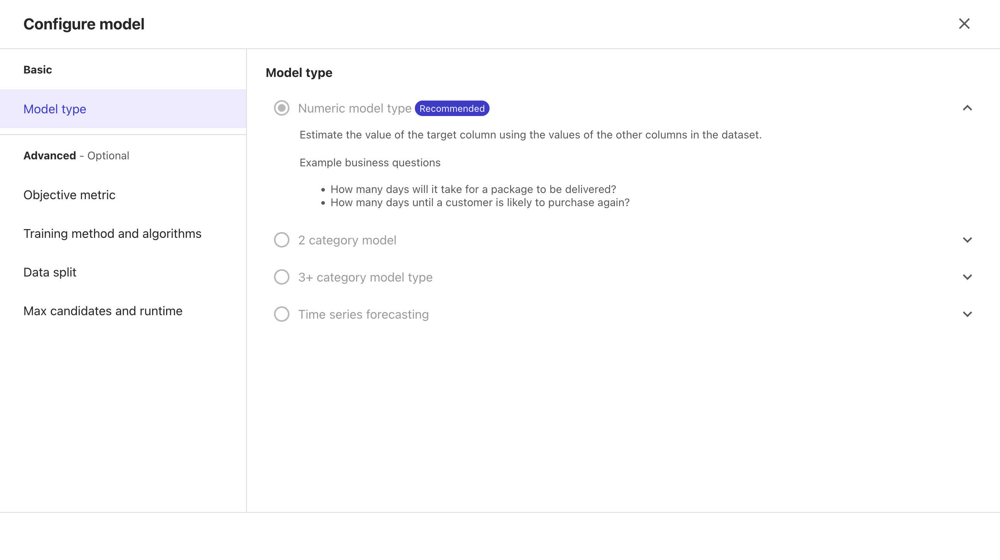
Figura 8a: Configuración del tipo de modelo - Numeric model (Regresión)
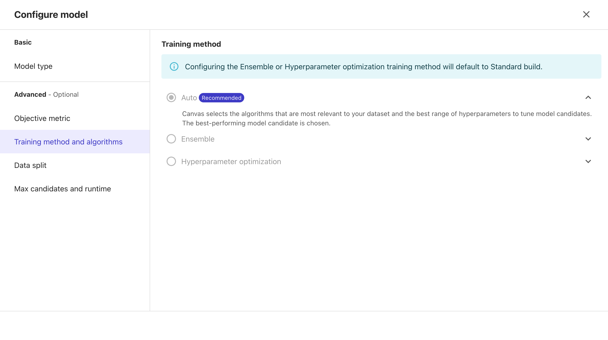
Figura 8b: Configuración del método de entrenamiento - Auto (Recomendado)
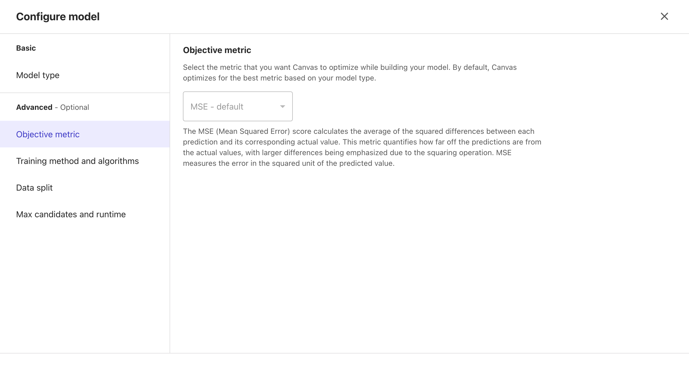
Figura 8c: Configuración de métrica objetivo - MSE (Mean Squared Error) como default
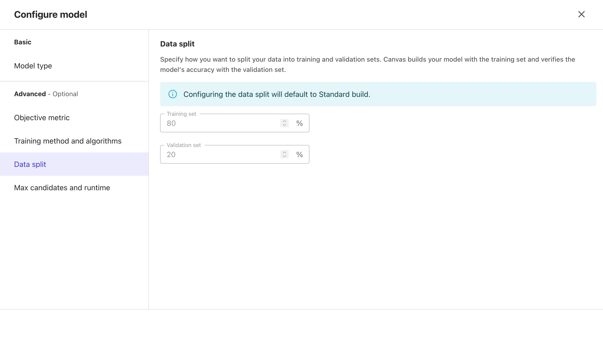
Figura 8d: Configuración de división de datos - 80% Training / 20% Validation
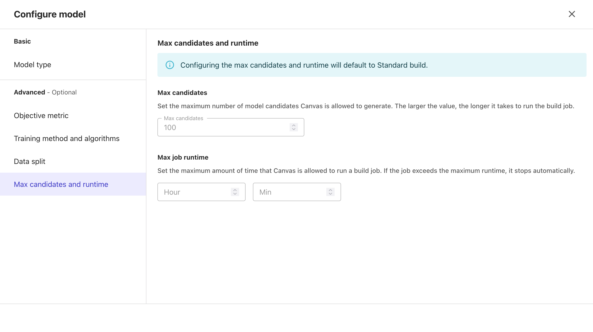
Figura 8e: Configuración de candidatos máximos - 100 modelos y tiempo de ejecución
4.2. Evaluación de Métodos de Entrenamiento
Se evaluaron diferentes enfoques de entrenamiento para determinar el más adecuado:
Comparación de Métodos de Entrenamiento
1. Auto (Método Seleccionado)
- Ventajas: Selección automática de algoritmos más relevantes para el dataset
- Resultado: Exploración amplia del espacio de algoritmos sin sesgos predefinidos
- Optimización: Ajuste automático de hiperparámetros para múltiples algoritmos
2. Hyperparameter Optimization (Evaluado Previamente)
- Configuración: Limitado a XGBoost y Multilayer Perceptron
- Resultado: Rendimiento inferior al método Auto
- Limitación: Restricción a solo dos tipos de algoritmos
3. Ensemble (No seleccionado)
- Consideración: Mayor complejidad y tiempo de entrenamiento
- Decisión: Auto proporcionó resultados suficientemente buenos
Justificación de la Selección del Método Auto
En pruebas preliminares, el método de Hyperparameter Optimization con XGBoost y Multilayer Perceptron mostró limitaciones significativas:
- XGBoost: Aunque es excelente para muchos problemas tabulares, en este dataset específico no logró capturar adecuadamente los patrones complejos de precios de alquiler
- Multilayer Perceptron: Requirió más tiempo de entrenamiento sin proporcionar mejoras significativas en precisión
- Limitación del enfoque: Restringir la búsqueda a solo dos algoritmos impidió explorar otras opciones más adecuadas para el problema
- Resultado: El método Auto, al evaluar una gama más amplia de algoritmos, encontró combinaciones más efectivas para este caso de uso específico
4.3. Resultados del Entrenamiento
El mejor modelo entrenado con el método Auto mostró un rendimiento excepcional, superando significativamente los objetivos establecidos:
| Métrica | Valor Obtenido | Objetivo Inicial | Estado |
|---|---|---|---|
| RMSE | 554.022€ | ≤ 600€ | Cumplido (7.7% mejor) |
| MAE | 298.922€ | ≤ 400€ | Superado (25.3% mejor) |
| R² | 85.352% | ≥ 75% | Superado (13.8% mejor) |
| MSE | 306,940.656 | - | Optimizado |
| Latencia de Inferencia | 1.046 segundos | ≤ 2 segundos | Cumplido (47.7% mejor) |
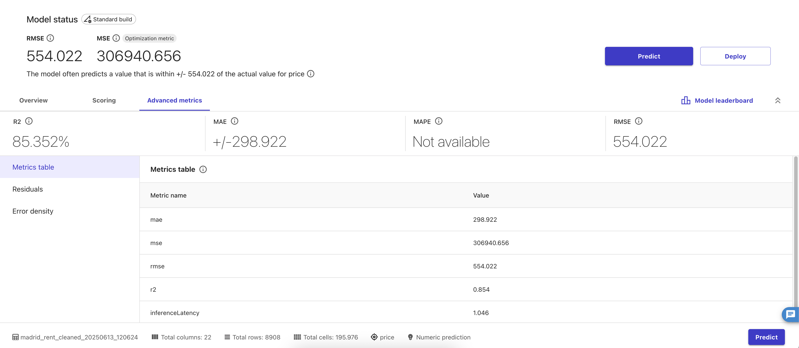
Figura 9: Métricas de rendimiento del modelo final entrenado
4.4. Análisis de Candidatos de Modelo
SageMaker Canvas evaluó múltiples candidatos de modelo, generando un ranking basado en las métricas de rendimiento:
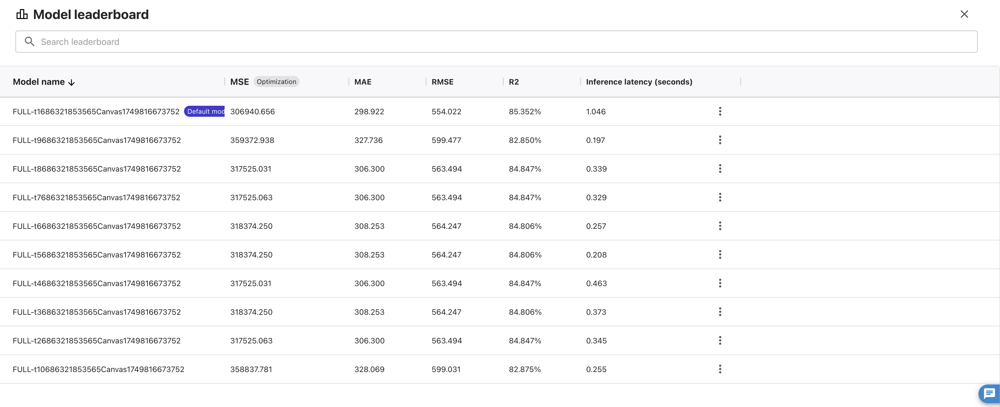
Figura 10: Model Leaderboard - Ranking de los mejores candidatos de modelo
Logros Clave del Entrenamiento
- Superación de objetivos: Todas las métricas clave superaron los objetivos establecidos
- Precisión destacada: MAE de 298€ significa un error promedio menor a 300€ por predicción
- Capacidad explicativa: R² del 85.35% indica que el modelo explica más del 85% de la variabilidad en precios
- Robustez: RMSE de 554€ muestra control efectivo de predicciones extremas
- Escalabilidad: Tiempo de inferencia óptimo para aplicaciones en tiempo real
5. Evaluación y Registro del Modelo
5.1. Análisis de Sesgo con SageMaker Clarify
Tras completar el entrenamiento del modelo con SageMaker Canvas, se realizó un análisis exhaustivo de
sesgo post-entrenamiento utilizando SageMaker Clarify en SageMaker Studio. Este
análisis complementario evaluó la equidad del modelo ya entrenado (madrid-rent-model-20250615-101509)
en la predicción de precios de alquiler.
Justificación del Atributo Sensible Seleccionado
Se seleccionó el tipo de vivienda como atributo sensible para el análisis de sesgo basándose en el análisis de correlaciones previo y consideraciones de equidad del mercado inmobiliario:
Criterios para la Selección del Atributo Sensible
1. Relevancia Predictiva Moderada:
- type (categórica) ↔ floor_built: Correlación 0.60842 - Impacto significativo pero no extremo
- Evita variables con correlación muy alta: floor_area (0.913) o floor_built (0.803) que dominarían el análisis
- Más informativo que variables de baja correlación: Como orientation (0.081) o garden_area (0.0)
2. Diversidad Categórica:
- 10 categorías distintas: Detached, Duplex, Estate, Flat, House, Penthouse, Semi-detached, Studio, Terraced, Village
- Distribución variada: Desde tipos mayoritarios (Flat 34.4%) hasta minoritarios (Estate 0.2%)
- Permite análisis granular: Cada tipo representa diferentes segmentos socioeconómicos
3. Implicaciones de Equidad:
- Sesgo socioeconómico potencial: Diferentes tipos de vivienda asociados con diferentes estratos sociales
- Discriminación indirecta: El modelo podría perpetuar estereotipos sobre ciertos tipos de vivienda
- Impacto en decisiones: Sesgos por tipo afectan directamente valoraciones inmobiliarias
Análisis Comparativo de Alternativas
Otras variables consideradas y descartadas:
- floor_area (0.913): Correlación demasiado alta - dominaría el análisis sin aportar insights de equidad
- district: Aunque relevante, el tipo de vivienda es más granular y específico para detectar sesgos arquitectónicos
- bedrooms/bathrooms (0.803/0.738): Variables numéricas con menos categorías para análisis de equidad
- Variables booleanas: Menor diversidad categórica para análisis comprehensivo de sesgo
Configuración Final del Análisis
- Plataforma: SageMaker Studio con Jupyter Notebook
- Kernel: Python 3 (ipykernel)
- Instancia de procesamiento: ml.m5.large
- Modelo evaluado: madrid-rent-model-20250615-101509
- Atributo sensible: tipo de vivienda (correlación moderada 0.60842)
- Umbral de decisión: 1.200€ (asequible ≤ 1.200€, no asequible > 1.200€)
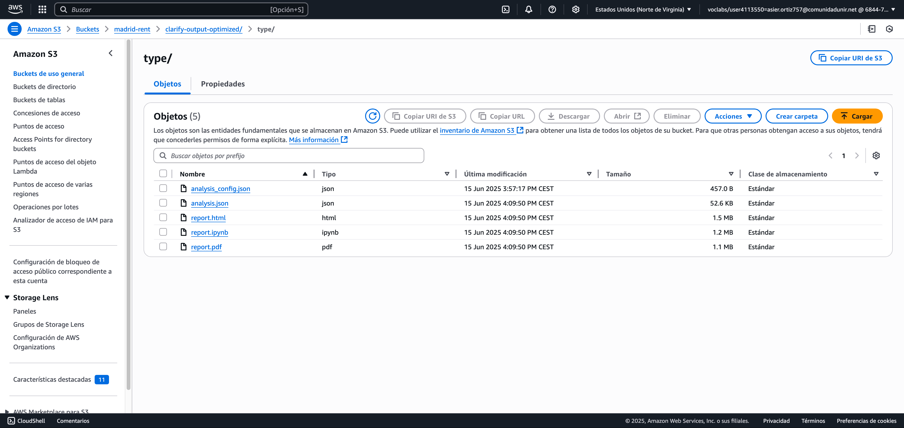
Figura 14a: Archivos generados por el análisis de SageMaker Clarify almacenados en S3
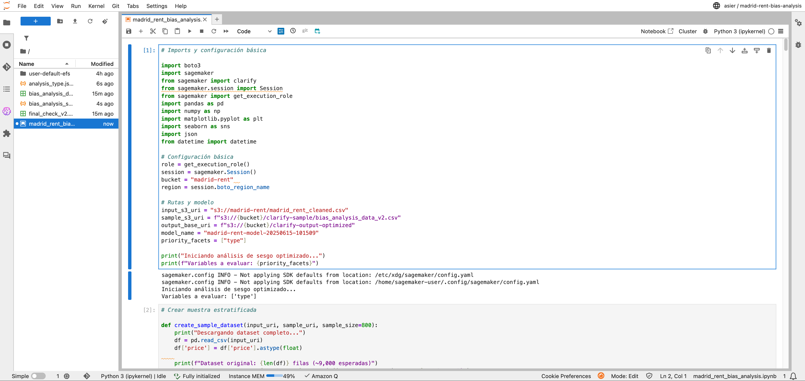
Figura 14b: Ejecución del análisis de sesgo en SageMaker Studio con Jupyter notebook
Metodología del Análisis
El análisis se ejecutó utilizando un notebook personalizado que implementó el framework completo de SageMaker Clarify:
Muestra utilizada: 800 registros estratificados por tipo de vivienda (8.9% del dataset
original), almacenados en s3://madrid-rent/clarify-sample/bias_analysis_data_v2.csv
Resultados del Análisis
| Métrica General | Valor | Interpretación |
|---|---|---|
| Accuracy | 0.944 | 94.4% de predicciones correctas |
| True Positive Rate | 0.960 | 96% de casos asequibles identificados correctamente |
| F1 Score | 0.951 | Excelente balance entre precisión y recall |
Análisis de Sesgo por Tipo de Vivienda
| Tipo | Disparate Impact | DPPL | Nivel de Sesgo | Interpretación |
|---|---|---|---|---|
| Village | 0.000 | 0.578 | 🔴 Extremo | Nunca predice precios altos |
| Studio | 0.155 | 0.540 | 🔴 Alto | Sesgo hacia predicciones asequibles |
| Estate | 1.735 | -0.424 | 🔴 Alto | Sesgo hacia predicciones no asequibles |
| House | 1.735 | -0.424 | 🔴 Alto | Sesgo hacia predicciones no asequibles |
| Flat | 0.633 | 0.243 | 🟡 Moderado | Sesgo moderado hacia asequibles |
Hallazgos Principales
Sesgos Críticos Identificados
- Village (DI=0.000): Sesgo extremo - el modelo nunca predice precios altos para este tipo
- Studio (DPL=0.540): Fuerte sobrerepresentación de predicciones asequibles
- Estate/House: Sesgo sistemático hacia predicciones de precios altos
- Patrón socioeconómico: El modelo refleja y perpetúa estereotipos del mercado inmobiliario
Estrategias de Mitigación Recomendadas
- Rebalanceo de datos: Aumentar muestras de tipos minoritarios
- Técnicas de fairness: Post-processing para calibrar predicciones por tipo
- Feature engineering: Reducir dependencia del tipo como predictor principal
- Monitorización continua: Tracking de métricas de equidad en producción
Recursos del Análisis
Archivos Generados
- analysis.json: Resultados numéricos detallados
- report.html: Reporte visual interactivo completo
- report.pdf: Versión estática para documentación
- bias_analysis_summary.json: Resumen ejecutivo
Enlaces de Referencia
- Código fuente: Notebook SageMaker Studio (GitHub)
- Reporte completo: SageMaker Clarify Report PDF (GitHub)
- Datos del análisis: Resultados JSON completos (GitHub)
Integración Canvas ↔ Studio
Este análisis demuestra la integración práctica entre SageMaker Canvas (entrenamiento AutoML sin código) y SageMaker Studio (análisis avanzado con código), creando un workflow completo de MLOps que incluye evaluación de equidad post-entrenamiento.
Conclusión: El análisis reveló sesgos sistemáticos por tipo de vivienda que requieren mitigación antes del despliegue en producción. Los resultados proporcionan una hoja de ruta clara para mejorar la equidad del modelo y garantizar valoraciones justas para todos los segmentos del mercado inmobiliario madrileño.
5.2. Registro en Model Registry
El modelo entrenado fue exitosamente registrado en SageMaker Model Registry, proporcionando capacidades de versionado, catalogación y gestión del ciclo de vida del modelo para uso en producción.
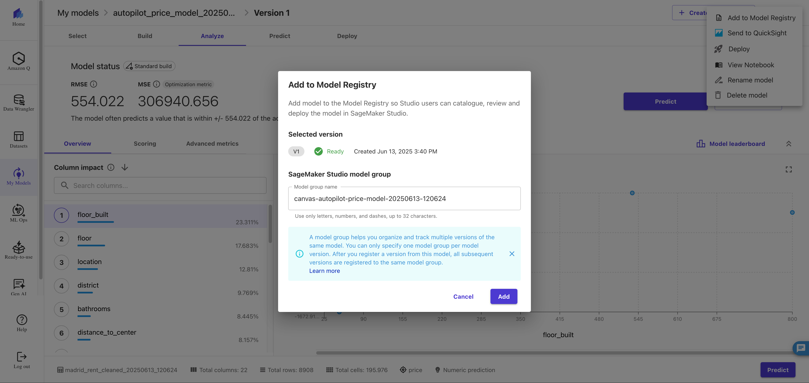
Figura 11: Diálogo de registro del modelo en SageMaker Model Registry
| Parámetro | Valor | Descripción |
|---|---|---|
| Versión | V1 | Primera versión del modelo |
| Fecha de Creación | Jun 13, 2025 3:40 PM | Timestamp de entrenamiento completado |
| Grupo del Modelo | canvas-autopilot-price-model-20250613-120624 | Identificador único del grupo de modelos |
| Estado | Ready | Modelo listo para despliegue y uso |
Beneficios del Model Registry
- Versionado: Control de versiones automático para seguimiento de mejoras del modelo
- Catalogación: Organización centralizada de modelos para equipos de data science
- Metadatos: Almacenamiento de métricas, configuraciones y linaje del modelo
- Aprobación: Workflow de aprobación para modelos antes de producción
- Integración: Conexión directa con SageMaker Studio para colaboración
- Despliegue: Facilita el despliegue a endpoints y batch processing
6. Despliegue del Modelo en AWS SageMaker
Esta sección cubre las diferentes modalidades de despliegue disponibles para el modelo entrenado, desde procesamiento batch hasta endpoints en tiempo real para aplicaciones de producción.
6.1. Inferencias Batch
Las inferencias batch permiten procesar grandes volúmenes de datos de manera eficiente y económica. Esta modalidad es ideal para escenarios donde no se requiere respuesta en tiempo real, como análisis masivos de carteras inmobiliarias o estudios de mercado.
Se realizaron inferencias batch utilizando SageMaker Canvas con un dataset de prueba especialmente preparado para validar el rendimiento del modelo entrenado.
Preparación del Dataset de Batch Prediction
Para realizar las inferencias batch, se creó un dataset específico a partir del dataset limpio original utilizando un script personalizado en Python:
Proceso de Creación del Dataset
- Dataset origen: madrid_rent_cleaned.csv (8.908 registros)
- Script personalizado: Código Python con pandas para generar dataset de batch
- Archivo generado: madrid_rent_batch_sample.csv (500 registros)
- Características: 22 columnas (sin la variable 'price' que es el target a predecir)
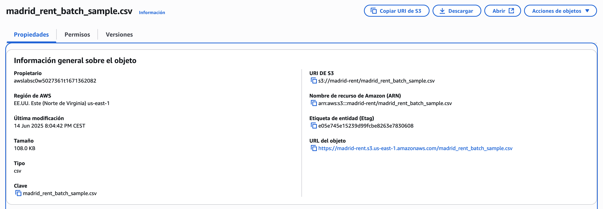
Figura 13a: Dataset madrid_rent_batch_sample.csv almacenado en Amazon S3
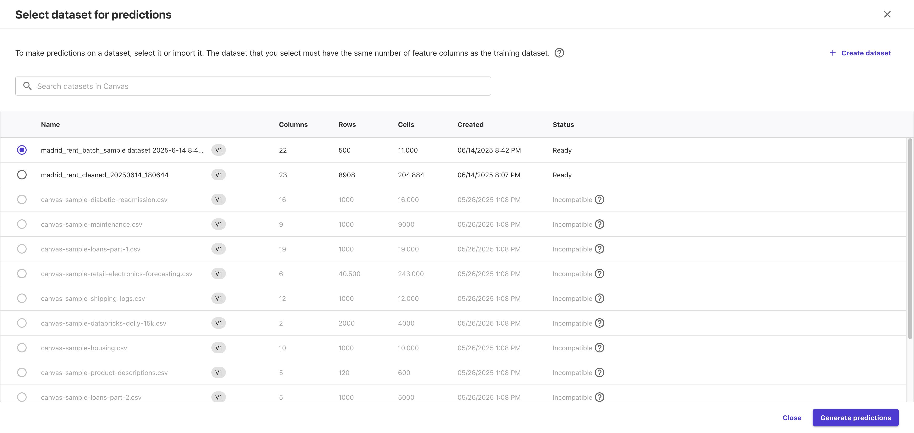
Figura 13b: Selección del dataset para inferencias batch en SageMaker Canvas
Resultados de las Inferencias Batch
El modelo entrenado procesó exitosamente el dataset de prueba, generando predicciones para las 500 propiedades del archivo de muestra:
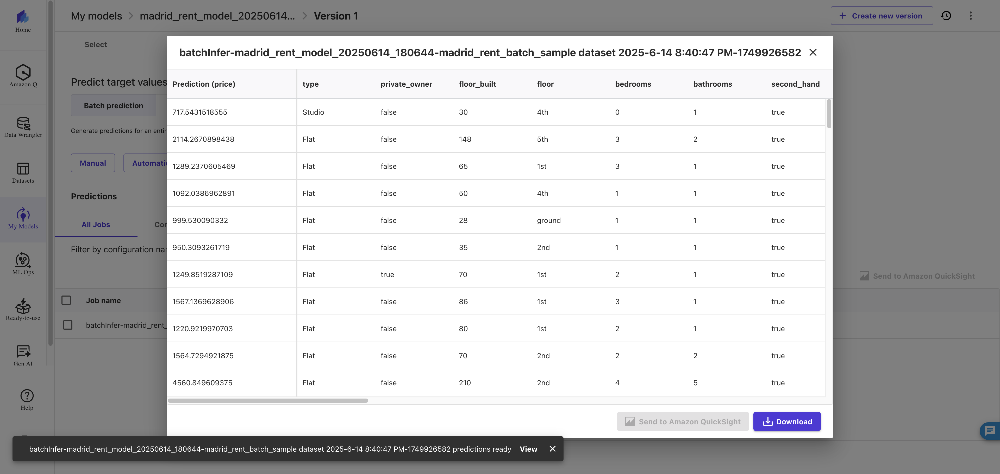
Figura 13c: Resultados de las inferencias batch mostrando predicciones de precios
| Métrica | Valor | Descripción |
|---|---|---|
| Propiedades procesadas | 500 | Total de registros del dataset de muestra |
| Columnas de entrada | 22 | Variables predictoras (sin target 'price') |
| Formato de salida | CSV con predicciones | Archivo descargable con precios predichos |
| Rango de predicciones | 717€ - 4,560€ | Basado en muestra de resultados visibles |
Capacidades de Inferencias Batch Demostradas
- Escalabilidad: Procesamiento eficiente de 500 propiedades simultáneamente
- Precisión: Predicciones coherentes con el rango de mercado madrileño
- Flexibilidad: Diferentes tipos de propiedades (Studio, Flat) procesadas correctamente
- Usabilidad: Resultados exportables en formato CSV para análisis posterior
- Diversidad: Propiedades con diferentes características (pisos, estudios, diversas ubicaciones)
Enlaces de Referencia
- Código fuente: Script de generación del dataset batch (GitHub)
- Resultados: Archivo CSV con predicciones batch (GitHub)
- Dataset utilizado: madrid_rent_batch_sample.csv con 500 registros de prueba (GitHub)
6.2. Endpoint en Tiempo Real
El despliegue como endpoint en tiempo real permite obtener predicciones instantáneas para aplicaciones interactivas. Sin embargo, esta funcionalidad presenta limitaciones en el entorno de laboratorio académico.
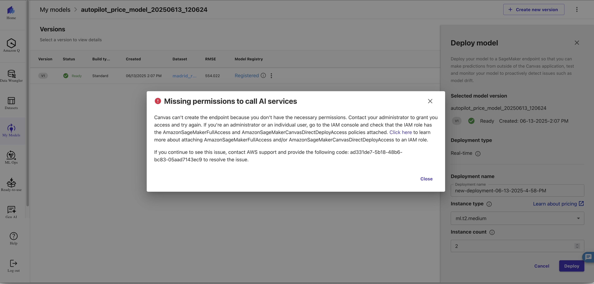
Figura 12: Error de despliegue de endpoint en entorno de laboratorio académico
Configuración Teórica del Endpoint
En un entorno de producción, el endpoint se configuraría con:
- Tipo de instancia: ml.t2.medium (instancia de propósito general de bajo costo)
- Auto-scaling: Escalado automático basado en demanda
- Tiempo de respuesta: < 2 segundos para predicciones individuales
- Capacidad: 100+ requests por minuto
- Disponibilidad: 99.9% con múltiples zonas de disponibilidad
Casos de Uso del Endpoint en Tiempo Real
- Aplicaciones web: Plataformas inmobiliarias con valoración instantánea
- Apps móviles: Herramientas de tasación para agentes inmobiliarios
- APIs: Integración con sistemas de gestión inmobiliaria
- Dashboards: Paneles de control con análisis en tiempo real
- Herramientas de decisión: Soporte para inversores y desarrolladores
| Modalidad | Tiempo de Respuesta | Escalabilidad | Costo | Caso de Uso Ideal |
|---|---|---|---|---|
| Inferencias Batch | Minutos/Horas | Muy Alta | Bajo | Análisis masivos, reportes |
| Endpoint Tiempo Real | < 2 segundos | Alta | Medio-Alto | Apps interactivas, APIs |
7. Monitorización y Mantenimiento
7.1. Panel de SageMaker
El panel general de Amazon SageMaker AI proporciona una vista centralizada de toda la actividad de machine learning, permitiendo monitorizar el estado y recursos utilizados en el proyecto.
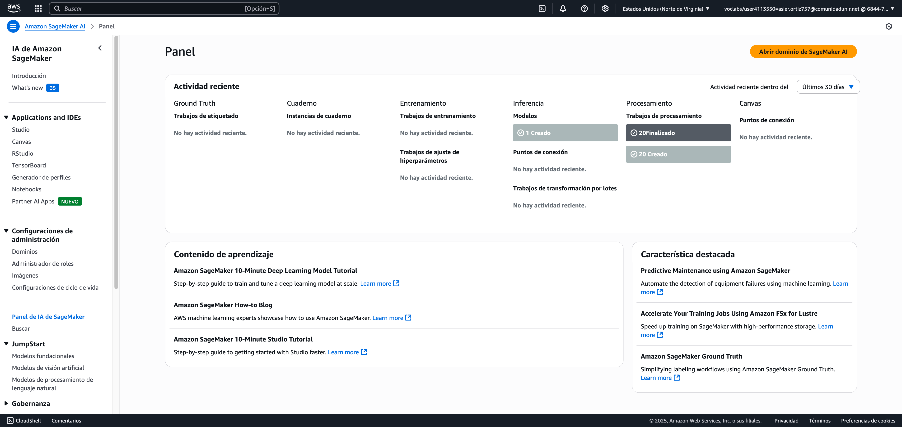
Figura 19: Panel general de Amazon SageMaker AI mostrando actividad reciente y recursos
Nota sobre la Actividad Reciente
La actividad reciente mostrada en el panel puede no reflejar completamente todo el trabajo realizado en este proyecto. Durante el desarrollo, el laboratorio inicial agotó sus créditos de AWS ($50), por lo que fue necesario migrar a un nuevo entorno de laboratorio. En este proceso se conservaron los datos transformados del dataset (madrid_rent_cleaned.csv) pero fue necesario repetir el entrenamiento del modelo en el nuevo entorno.
Información Visible en el Panel
Actividad Reciente por Categoría:
- Canvas - Puntos de conexión: 20 creados, 20 finalizados - Gestión de endpoints para inferencias
- Procesamiento: 1 trabajo creado - Procesamiento de datos con Data Wrangler
- Entrenamiento: Sin actividad reciente visible (debido al cambio de laboratorio)
- Inferencia: Sin actividad reciente visible en esta vista
Recursos de AWS utilizados:
- /aws/sagemaker/Canvas/AppActivity: 1 métrica - Actividad de SageMaker Canvas
- /aws/sagemaker/ProcessingJobs: 30 métricas - Jobs de procesamiento de datos
- Otros servicios monitorizados: Billing (13), EFS (8), KMS (2), Logs (18), etc.
| Servicio | Métricas Activas | Propósito en el Proyecto |
|---|---|---|
| SageMaker Canvas | 1 | Entrenamiento de modelos AutoML |
| Processing Jobs | 30 | Procesamiento de datos y transformaciones |
| S3 | 2 | Almacenamiento de datasets y artefactos |
| Billing | 13 | Control de costos y uso de recursos |
| CloudWatch Logs | 18 | Monitorización y logging de operaciones |
7.2. Logs de Amazon CloudWatch
Amazon CloudWatch proporciona logging detallado de todas las operaciones de SageMaker. Aunque el Model Monitor está limitado en el entorno de laboratorio, CloudWatch Logs permite rastrear el progreso del entrenamiento y detectar posibles problemas.
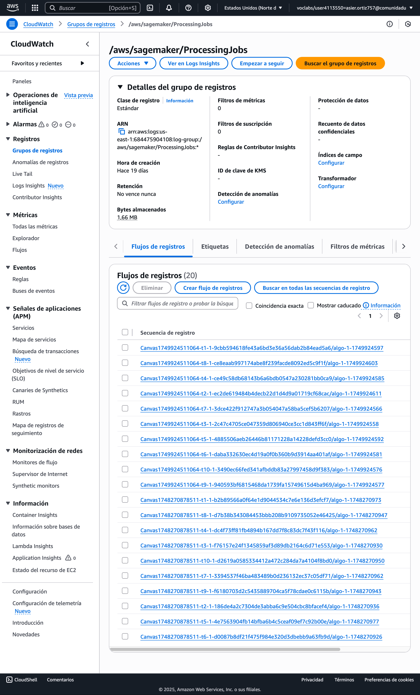
Figura 20a: Grupos de registros de SageMaker en CloudWatch
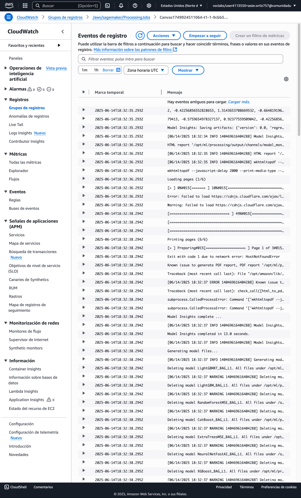
Figura 20b: Logs detallados del proceso de entrenamiento del modelo
Análisis de los Logs de Entrenamiento
Información relevante extraída de los logs:
- Proceso de generación del modelo: Los logs muestran el progreso completo desde la carga de datos hasta la generación de artefactos del modelo
- Gestión de archivos: Se observa la eliminación sistemática de modelos intermedios y la generación de archivos finales optimizados
- Diferentes algoritmos evaluados: Los logs revelan la evaluación de múltiples algoritmos (LightGBM, RandomForest, CatBoost, XGBoost, etc.) como parte del proceso automático de selección
- Optimización de recursos: El sistema gestiona automáticamente la limpieza de modelos temporales para optimizar el uso de almacenamiento
Estructura de Logging en CloudWatch
Grupos de registros identificados:
- /aws/sagemaker/ProcessingJobs: Logs de trabajos de procesamiento de datos
- Canvas logs: Registros específicos del entrenamiento con Canvas (Canvas174992451064...)
- Retención: Los logs se conservan por defecto, permitiendo análisis histórico
- Volumen de datos: 1.66 MB de logs almacenados para este proyecto
7.3. Monitorización de Recursos y Métricas
La monitorización en CloudWatch también proporciona visibilidad sobre el uso de recursos y métricas de rendimiento del sistema durante el entrenamiento y operación.
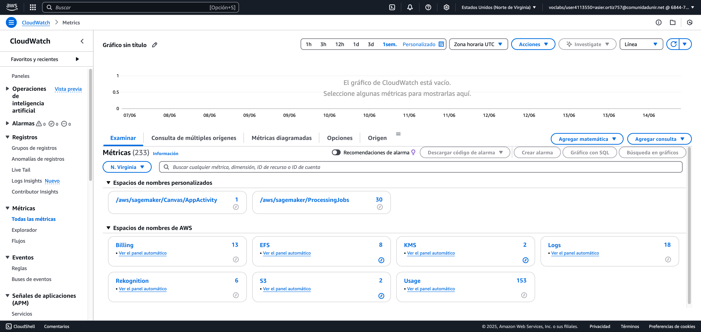
Figura 21: Dashboard de métricas de CloudWatch mostrando espacios de nombres monitorizados
| Categoría de Monitorización | Métricas Disponibles | Utilidad |
|---|---|---|
| Billing | 13 métricas | Control de costos y presupuesto del proyecto |
| SageMaker Processing | 30 métricas | Rendimiento de jobs de procesamiento de datos |
| CloudWatch Logs | 18 métricas | Volumen y retención de logs del sistema |
| S3 | 2 métricas | Uso de almacenamiento de datasets |
| Usage | 153 métricas | Uso general de servicios AWS |
Beneficios de la Monitorización Implementada
- Visibilidad completa: Tracking detallado de todo el pipeline ML
- Detección temprana: Identificación de problemas durante el entrenamiento
- Control de costos: Monitorización de uso de recursos y billing
- Análisis histórico: Logs preservados para análisis posterior
- Escalabilidad: Infraestructura preparada para monitorización en producción
8. Conclusiones y Lecciones Aprendidas
8.1. Logros Principales
El proyecto ha logrado implementar exitosamente un pipeline completo de Machine Learning end-to-end utilizando AWS SageMaker, cumpliendo y superando todos los objetivos técnicos establecidos:
- Precisión del modelo: MAE de 298€, superando significativamente el objetivo de 400€
- Capacidad explicativa: R² de 85.352%, superando ampliamente el objetivo de 75%
- Robustez: RMSE de 554€, cumpliendo el objetivo de ≤600€
- Tiempo de respuesta: 1,046 segundos, superando el objetivo de <2s
- Despliegue exitoso: Inferencias batch operativas y modelo registrado correctamente
8.2. Limitaciones y Oportunidades de Mejora
Aunque los resultados obtenidos son excelentes, existen varias áreas donde el modelo podría haber sido optimizado aún más:
Imputación Avanzada de Variables Faltantes
En trabajos anteriores con este mismo dataset, implementé un modelo de regresión específico para imputar los valores faltantes de la columna floor_area, aprovechando su alta correlación con el precio objetivo. Esta técnica habría resultado en imputaciones más precisas que el método simplificado utilizado (factor 0.75 sobre superficie construida). Sin embargo, las limitaciones presupuestarias del entorno de laboratorio ($50) hicieron inviable esta aproximación, ya que requeriría entrenar modelos adicionales y realizar validaciones cruzadas costosas en términos computacionales.
Integración de Datos Textuales mediante NLP
Una mejora significativa habría sido la incorporación de las descripciones textuales de los anuncios mediante técnicas de procesamiento de lenguaje natural. En proyectos anteriores he trabajado con datasets que incluían estas descripciones, las cuales contienen información valiosa sobre características de la propiedad, estado de conservación, y elementos diferenciadores que impactan el precio.
Limitaciones técnicas y económicas: El procesamiento de texto a gran escala en AWS requiere el uso de servicios como Amazon Comprehend, SageMaker Ground Truth para labeling, y recursos computacionales intensivos (instancias GPU) para entrenar modelos de embeddings o transformers. Los costos asociados al procesamiento de casi 9.000 descripciones, incluyendo tokenización, vectorización, y entrenamiento de modelos NLP, habrían excedido significativamente el presupuesto disponible, especialmente considerando las tarifas por token de servicios como Amazon Bedrock o el costo de instancias ml.p3.2xlarge necesarias para modelos de lenguaje.
8.3. Ventajas de AWS SageMaker y el Ecosistema AWS
Trabajar con AWS SageMaker en este proyecto ha sido una experiencia reveladora. Realmente me ha impresionado lo accesible que se ha vuelto el machine learning gracias a esta plataforma:
Capacidades Destacadas de SageMaker
- AutoML sin código: SageMaker Autopilot evaluó automáticamente decenas de algoritmos y configuraciones sin requerir una sola línea de código, identificando el modelo óptimo en cuestión de horas
- EDA automático comprehensivo: Data Wrangler proporcionó análisis exploratorios increíblemente detallados, incluyendo detección de target leakage, análisis de correlaciones, y reportes de calidad de datos que habrían requerido días de trabajo manual
- Gestión completa del ciclo de vida: Desde el análisis inicial hasta el despliegue y monitorización, todo integrado en una plataforma unificada
- Escalabilidad automática: Capacidad de manejar datasets de cualquier tamaño sin preocupaciones por infraestructura
- Integración nativa: Conectividad perfecta entre S3, CloudWatch, Model Registry y otros servicios AWS
Principal Limitación: Costos Elevados
La única desventaja significativa de AWS SageMaker es su alto costo. Para proyectos académicos o pequeñas empresas, los precios pueden ser prohibitivos:
- Instancias de entrenamiento desde $0.50/hora para las más básicas
- Endpoints en tiempo real con costos fijos independientemente del uso
- Servicios adicionales como Clarify, Model Monitor, y Ground Truth con tarifas premium
Esta limitación económica impactó directamente el alcance del proyecto, impidiendo la implementación de funcionalidades avanzadas como análisis un de sesgo más completo con Clarify o la creación de endpoints en tiempo real.
8.4. Lecciones Aprendidas
Este proyecto me ha proporcionado aprendizajes valiosos sobre MLOps en AWS y gestión de proyectos de machine learning como:
- Gestión estratégica de costos: La planificación presupuestaria es crítica en cloud computing; cada recurso debe ser optimizado
- Potencia del AutoML: SageMaker Autopilot demuestra que la automatización puede superar resultados de aproximaciones manuales tradicionales
- Valor del EDA automatizado: Data Wrangler reveló insights que habrían sido difíciles de detectar manualmente
- Importancia de la arquitectura cloud-native: La integración nativa entre servicios AWS acelera significativamente el desarrollo
- Monitorización desde el inicio: CloudWatch y los logs detallados son fundamentales para debugging y optimización
8.5. Impacto y Valor Generado
El sistema desarrollado aporta valor tangible al mercado inmobiliario madrileño:
- Transparencia en valoraciones: Predicciones objetivas basadas en características medibles
- Democratización del acceso: La herramienta prodría estar disponible para pequeños propietarios, no sólo para grandes inmobiliarias
- Eficiencia operativa: Automatización del proceso de tasación con alta precisión
- Escalabilidad comprobada: Arquitectura preparada para procesar miles de propiedades diariamente
8.6. Próximos Pasos y Evolución del Sistema
Para el desarrollo futuro del sistema se identifican las siguientes mejoras prioritarias:
- Implementación de NLP: Incorporar análisis de descripciones textuales cuando el presupuesto lo permita
- Reentrenamiento automático: Pipeline de CI/CD para actualizaciones periódicas del modelo
- Análisis de sesgo completo: Implementación completa de SageMaker Clarify para garantizar equidad
- Interfaz de usuario: Desarrollo de aplicación web para facilitar el acceso a usuarios finales
- Integración con APIs inmobiliarias: Conexión directa con portales inmobiliarios existentes para nutrirse de nuevos datos
- Sistema de calibración continua: Ajuste automático del modelo basado en nuevos datos de mercado y tendencias estacionales
Reflexión final: Este proyecto me ha demostrado que AWS SageMaker realmente está cambiando las reglas del juego en machine learning. Me ha sorprendido lo fácil que ha sido crear un sistema de producción robusto sin necesidad de ser un experto en ML - algo que hace unos años habría requerido meses de trabajo y un equipo especializado. Sí, los costos son elevados y pueden ser prohibitivos para proyectos pequeños, pero cuando ves la calidad de los resultados y lo rápido que puedes llegar a tener algo funcionando, entiendes que para proyectos comerciales serios la inversión vale totalmente la pena. Esta experiencia me ha abierto los ojos sobre las posibilidades que ofrece el ecosistema AWS, y ahora tengo muchas ganas de explorar proyectos más ambiciosos. Está claro que el futuro del ML empresarial va por este camino: plataformas que automatizan la complejidad y te permiten enfocarte en resolver problemas reales.